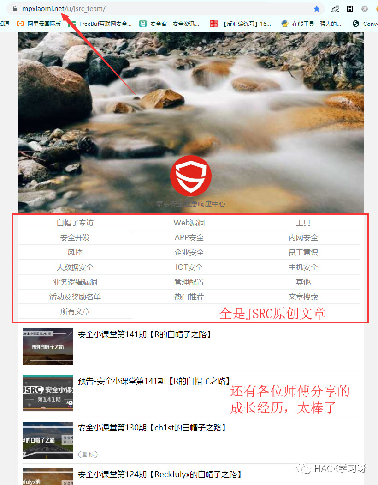
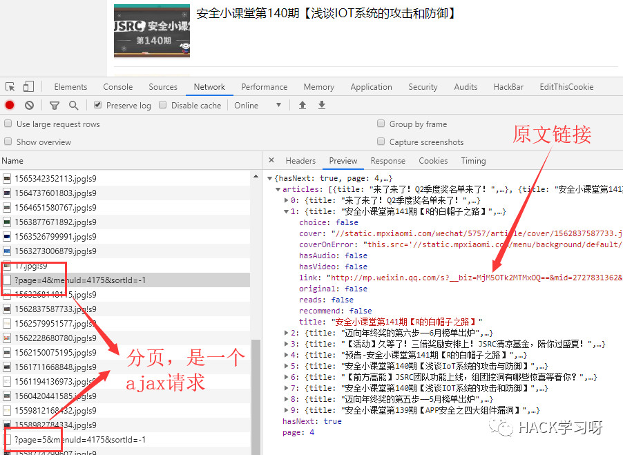
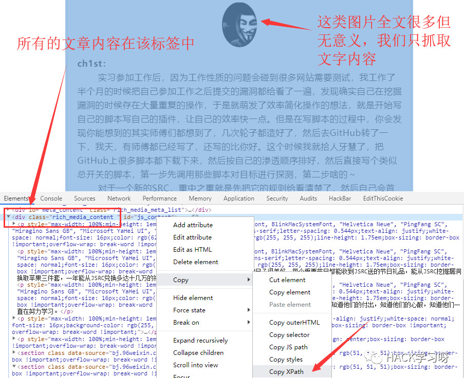
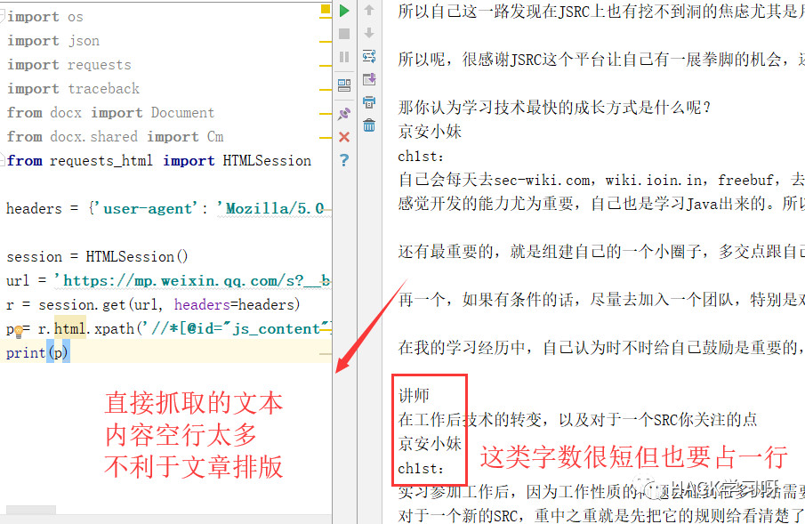
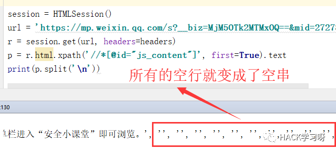
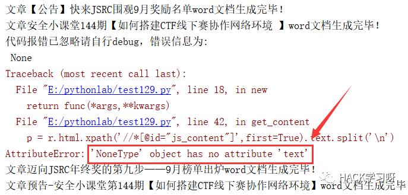
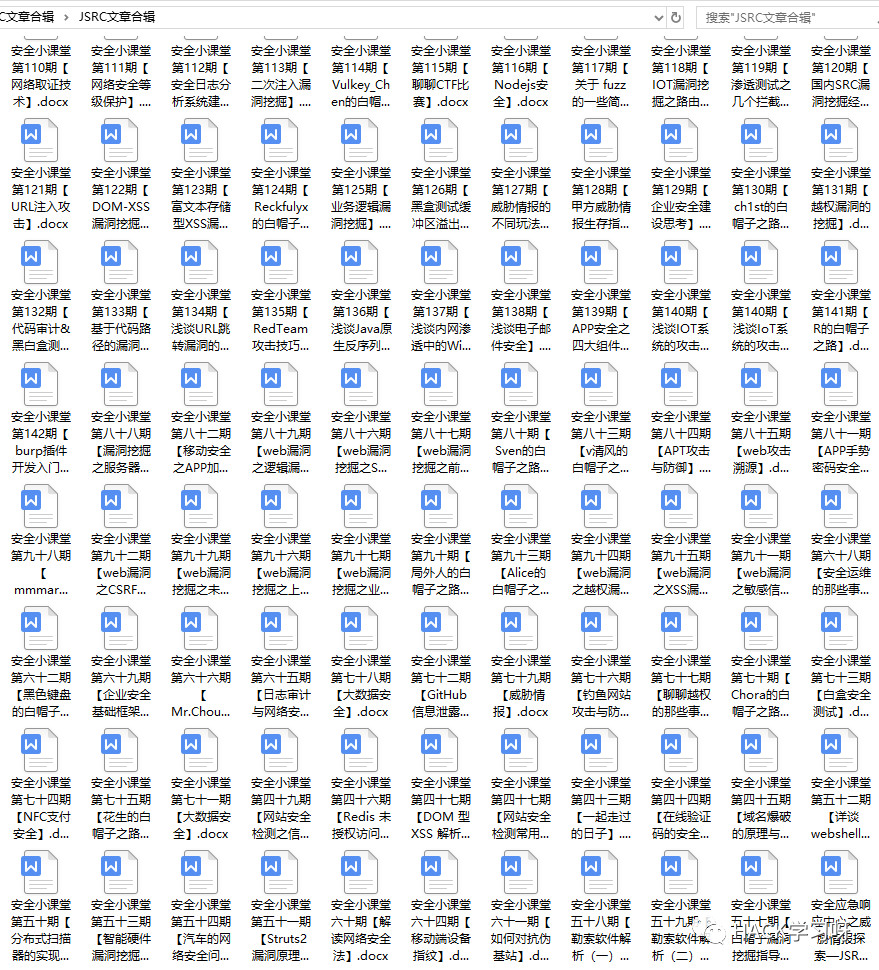
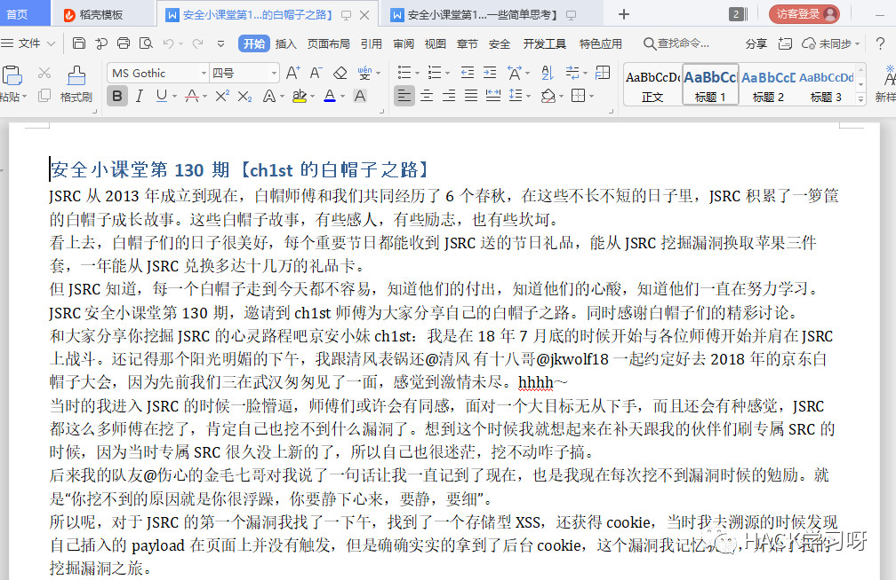

Python实战 | 抓取京东SRC安全技术文章自动化生成Word文档
平时关注的SRC公众号挺多的，不过发现经常发安全技术文章的SRC也就那么几家，像ASRC和JSRC这些大厂的SRC确实对安全足够重视而且经常发一些原创的技术文章供白帽子们学习，真的很赞。我特别喜欢JSRC，因为他们还会定期采访JSRC的白帽们，分享他们的技术成长之路。每次看完我觉得都能从各位表哥和师傅身上学到很多东西，这也逐渐成为了我成长的一部分。
因为经常看公众号上的文章，而且公众号上的很多历史文章都写的非常棒。但是每次都要翻很久，觉得很麻烦。所以就萌发了把JSRC公众号上的文章全部抓取下来的想法，并把一些优秀的文章打印出来慢慢品味。而且最棒的是JSRC的文章有单独的运营平台，而不是全在微信上的，这样抓取也变得更容易了。
在公众号上找文章合辑的入口，打开是JSRC所有的历史文章分类，但这个不是微信里的历史文章。好像这是一个微信公众号历史消息智能管理工具的平台，反正能看到所有文章就是了。

所以我的想法就是直接抓取这个平台上的文章，这上面的文章链接还是微信的，不过这不影响我们抓取。同样打开开发者工具查看请求信息，因为往下拉的时候会继续加载后面的文章但页面并没有刷新，所以我猜多半都是ajax请求拿数据，然后再用JS渲染生成的页面。

看到是返回的json格式的数据，感觉就相当容易了。我直接post页数过去就能拿到所有链接。而且这个平台也没做什么反爬，so easy。同样脚本实现也很简单。代码如下：
def get_xvlink():
f = open('vxlink.txt','a')
for i in range(1,23):
r = requests.get('https://www.mpxiaomi.net/menu/articles/?page={}&menuId=4175&sortId=-1'.format(str(i)))
info = json.loads(r.text)['articles']
print('正在抓取第{}页的链接'.format(str(i)))
for i in info:
f.write(i['title']+ '&&&&&'+i['link']+'\n')
f.close()这里我的想法是先把所有的文章标题和链接写入到一个文本文件中，之后再统一请求文章内容。那么接下来要做的就是遍历所有文章链接抓取内容了。我们先分析微信文章的大致结构。这里我们以ch1st表哥分享的成长经历文章为例。

在Elements面板中，找到该标签复制他的xpath。这样思路就大概确定了，只抓取文章中文字内容。以往我都是用requests+Beautifulsoup来抓取内容。不过这次打算换个办法，采用requests作者的一款新的开源库requests-html。算是requests升级版了，极力推荐大家。
这是requests-html官方的介绍
全面支持解析JavaScript!CSS 选择器 (jQuery风格, 感谢PyQuery).XPath 选择器, for the faint at heart.自定义user-agent (就像一个真正的web浏览器).自动追踪重定向.连接池与cookie持久化.令人欣喜的请求体验，魔法般的解析页面.
又减少了我很多的代码量。
def get_content(url):
text = ''
r = session.get(url,headers=headers)
p = r.html.xpath('//*[@id="js_content"]',first=True).text.split('\n')
p = [i for i in p if i !='']
for i in p:
if len(i) < 20:
text += i
else:
text += i+'\n'
return text由于我只要文本内容，那么问题就得极为简单，直接调用.text方法即可得到该标签中的所有文本内容，简直不要太方便。但是这有个问题，空行实在太多！

因为我是想用代码将他们自动生成word文档用于打印。所以要去掉空行以及把一些字数很短的合为一行，节省空间。
分享一下我的思路，我上面是用了split方法，以\n作为分隔符，将其变为一个列表，再用一个列表推导式去除空串即可。

至于怎么合并短的字符串呢？用for循环遍历整个列表，凡是字数小于20的一行就与下一行合并，以此类推。
现在文章的内容已经处理完了。接下来就是如何自动生成Word文档了。这里我是用的Python-docx这个处理word文档的库来解决的。这里我就直接展示代码了。
def generate_word(title,text):
document = Document() #定义一个文档对象
sections = document.sections
for section in sections: #调整页边距
section.top_margin = Cm(0)
section.bottom_margin = Cm(0)
section.left_margin = Cm(1)
section.right_margin = Cm(1)
document.add_heading(title) #写入标题
document.add_paragraph(text) #写入文章内容
document.save(title+'.docx')
print('文章'+title+'word文档生成完毕！')先定义一个文档对象，因为没有那么多花里胡哨的要求，我只需要把页边距调小些，这样一页就可以容纳更多的文字内容，打印的时候也能省些钱。
接下来就可以开始批量抓取了。当然这里为了避免一些不清楚的异常发生，我还是定义了一个捕获异常的装饰器函数。

类似于这种，文章中只有一张图片的，没有文字内容就会引发报错，反正这种也不用管，完整代码如下，感兴趣的小伙伴也可以把脚本跑来玩一玩。
import os
import json
import requests
import traceback
from docx import Document
from docx.shared import Cm
from requests_html import HTMLSession
headers = {'user-agent': 'Mozilla/5.0 (Windows NT 10.0; Win64; x64) AppleWebKit/537.36 (KHTML, like Gecko) Chrome/77.0.3865.120 Safari/537.36'}
session = HTMLSession()
def get_exception(func):
def new(*args,**kwargs):
try:
return func(*args,**kwargs)
except Exception as e:
print('代码报错已忽略请自行debug，错误信息为:\n',traceback.print_exc())
return new
@get_exception
def generate_word(title,text):
document = Document()
sections = document.sections
for section in sections:
section.top_margin = Cm(0)
section.bottom_margin = Cm(0)
section.left_margin = Cm(1)
section.right_margin = Cm(1)
document.add_heading(title)
document.add_paragraph(text)
document.save(title+'.docx')
print('文章'+title+'word文档生成完毕！')
@get_exception
def get_content(url):
text = ''
r = session.get(url,headers=headers)
p = r.html.xpath('//*[@id="js_content"]',first=True).text.split('\n')
p = [i for i in p if i !='']
for i in p:
if len(i) < 20:
text += i
else:
text += i+'\n'
return text
@get_exception
def get_xvlink():
f = open('vxlink.txt','a')
for i in range(1,23):
r = requests.get('https://www.mpxiaomi.net/menu/articles/?page={}&menuId=4175&sortId=-1'.format(str(i)))
info = json.loads(r.text)['articles']
print('正在抓取第{}页的链接'.format(str(i)))
for i in info:
f.write(i['title']+ '&&&&&'+i['link']+'\n')
f.close()
def check_path():
path = './JSRC文章合辑'
if not os.path.exists(path): os.mkdir(path)
os.chdir(path)
def main():
if not os.path.exists('vxlink.txt'):
get_xvlink()
with open('vxlink.txt','r')as f:
urls = f.readlines()
for url in urls:
(title,url) = url.split('&&&&&')
text = get_content(url)
generate_word(title,text)
if __name__ == '__main__':
check_path()
main()我就直接扔我服务器跑就行了，然后把文章打包下载到本地。

这里是我打包好的文章合辑，全是原创技术文章，JSRC太棒了！大家可以点这里下载。
JSRC文章合辑.zip下载地址：
链接:https://pan.baidu.com/s/1KY0xMmh7wSE68qiiTGKcGA 密码:tl3d
这就很nice了，Word文档打开类似这样，排版很紧凑主要是我方便打印。

把师傅们的文章拿去打印出来，慢慢品味。看师傅们是如何成长的，同时也是帮助自己成长，虽然我现在还不怎么会挖洞，但我不断沉淀，我相信会变得更优秀的。

推荐阅读
网络安全-思维导图集合
https://github.com/SecWiki/sec-chart
这个项目上的思维导图非常详细，推荐下载回来细细品味
原创投稿作者：zgao
点击阅读原文，即可跳转至原文地址